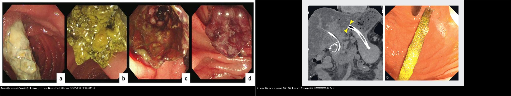
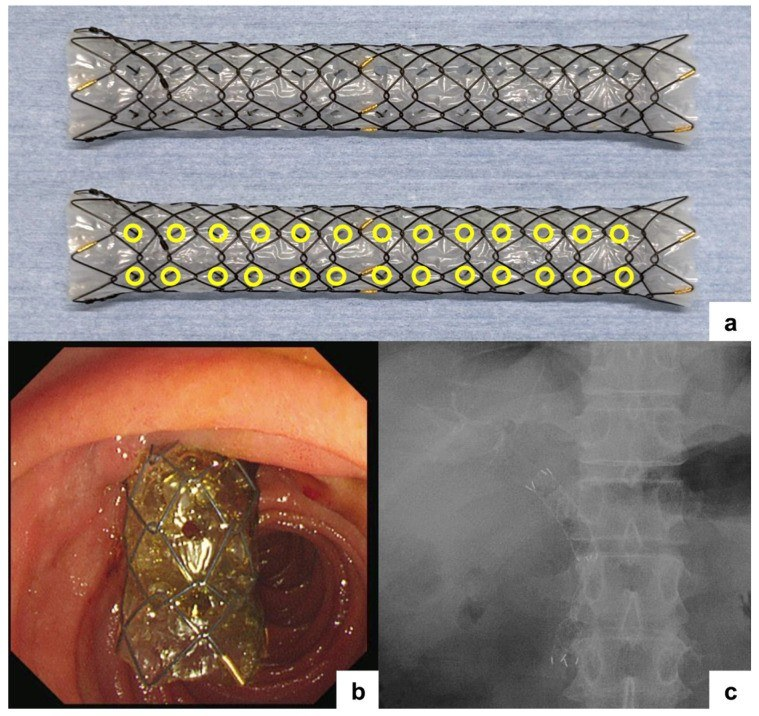
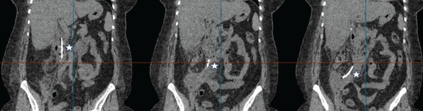
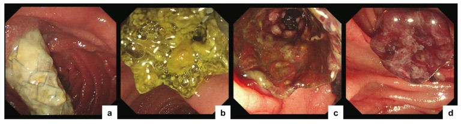
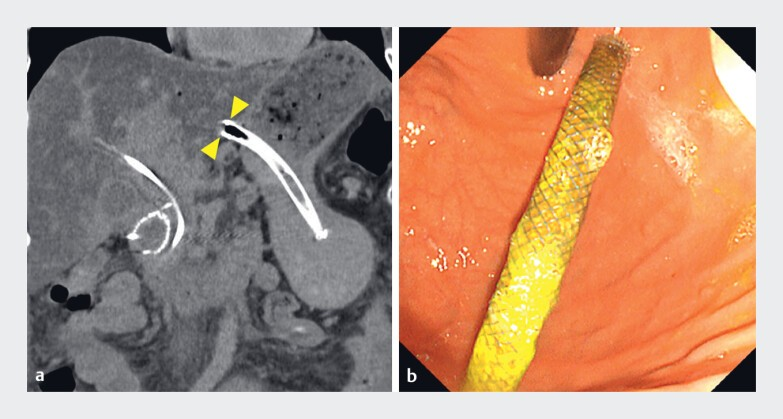
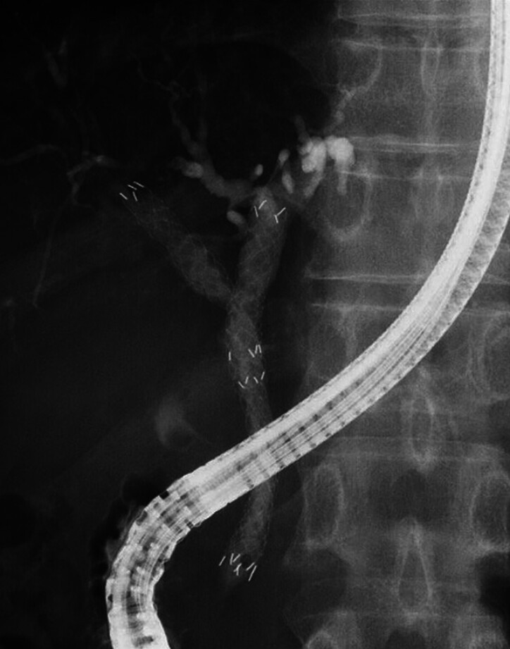
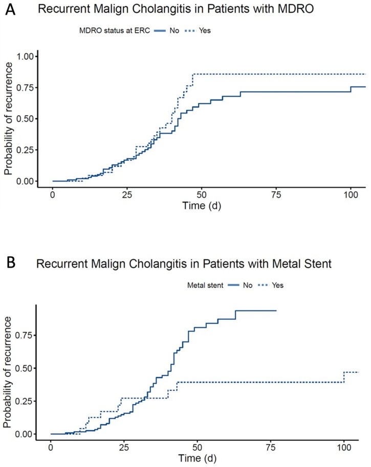
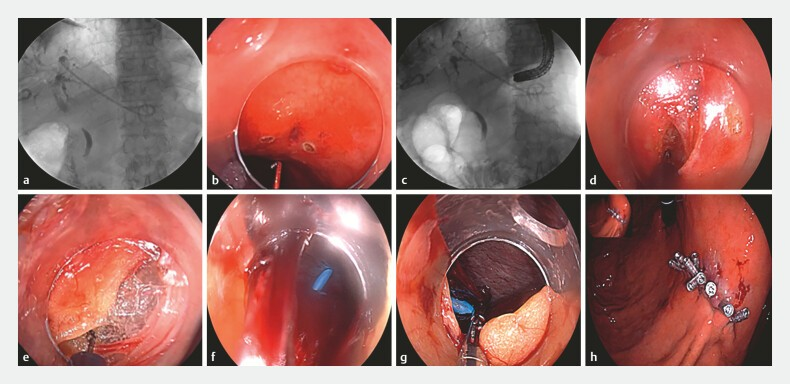
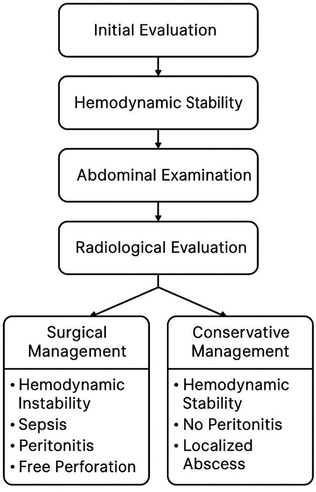

137 — Theo dõi sau dẫn lưu/stent đường mật: di trú, tắc & viêm đường mật tái phát / Follow-up of biliary drainage & stents: migration, occlusion & recurrent cholangitis
Tags: pattern:tac-mat pattern:bien-chung-stent pattern:di-tru-stent vung:duong-mat protocol:ERCP protocol:MRCP protocol:PTBD incidentaloma:stent-di-tru
Mức chắc chắn (certainty): tổng hợp y văn (literature synthesis) — nhóm tự biên từ y văn mở (CC BY 4.0 và CC BY-NC 4.0); các ca minh họa là ca nguyên văn của bài gốc (giữ đúng tuổi/thời điểm trong chú thích).
Đây là bước tiếp theo của 131 – Tắc mật, 132 – Hẹp đường mật không xác định và 133 – Hẹp miệng nối sau ghép gan: sau khi đã đặt stent/dẫn lưu, câu hỏi đổi từ "mở đường mật" sang "stent còn thông không, có di trú không, và vì sao bệnh nhân lại sốt/vàng da?".
1. Tổng quan bệnh học – cơ chế hình ảnh
- Đặt stent/dẫn lưu đường mật là điều trị tạm thời hay tạm ổn cho tắc mật ác tính (u đầu tụy, u đường mật, di căn hạch rốn gan) và một số hẹp lành tính. Các loại chính: stent nhựa (plastic stent – PS), stent kim loại tự bung (self-expandable metal stent – SEMS) — không phủ (U-SEMS), phủ một phần (PC-SEMS), phủ toàn bộ (FC-SEMS) — và dẫn lưu qua nội soi siêu âm (EUS-guided: choledochoduodenostomy – CDS / hepaticogastrostomy – HGS).
- Biến chứng lõi gọi chung là "tắc stent tái phát" (recurrent biliary obstruction – RBO), gồm hai cơ chế: (1) TẮC (occlusion) và (2) DI TRÚ (migration). Khoảng thời gian tới RBO gọi là TRBO (time to recurrent biliary obstruction) — đây là thước đo kết cục chuẩn của mọi nghiên cứu stent.
- TẠI SAO (vật lý + mô bệnh):
- Stent nhựa có lòng nhỏ (~7–10 Fr) nên mật dễ ứ → màng sinh học (biofilm) + cặn bùn (sludge) bám kín lòng trong vài tuần → tắc sớm.
- U-SEMS không phủ: u mọc xuyên qua mắt lưới (tumor ingrowth) → tắc muộn; FC-SEMS phủ kín: ngăn u mọc xuyên nhưng không có chỗ bám nên trượt — nhất là khi hóa trị làm u nhỏ đi (co u → nới lỏng → di trú).
- MH-SEMS (multi-hole SEMS) đục các lỗ phụ đường kính 1,8 mm trên màng phủ: cho biểu mô đường mật mọc vào giới hạn qua lỗ để neo stent nhưng vẫn chặn u. Số lỗ nhiều quá lại để u mọc xuyên → thiết kế thế hệ 2 giảm ~30% số lỗ [J Clin Med 2026, PMC12941519].
- MRCP (T2 3D): mật là dịch → tăng tín hiệu mạnh; cặn bùn/sỏi/u nằm trong lòng ống = khuyết tín hiệu T2, còn chỗ tắc hoàn toàn mất tín hiệu. CT đa thì: khuyết thuốc trong lòng ống giãn; stent kim loại gây giả ảnh beam-hardening quầng sáng/tối quanh stent → dễ che mất tổn thương sát stent.
- Ngưỡng định lượng nổi lòng:
- PC-SEMS vs FC-SEMS (ung thư tắc mật xa, n = 81): di trú 3% vs 36% (p < 0,001); RBO 21% vs 43% (p = 0,036); u mọc xuyên 10% vs 0%; tỉ lệ KHÔNG RBO lúc 6 tháng 90% vs 68%; sống toàn bộ trung vị 247 vs 307 ngày [DEN Open 2025, PMC11923903].
- MH-SEMS: TRBO trung vị 479 ngày; di trú có triệu chứng 2,6% so với FC-SEMS 15,8%; một nghiên cứu khác RBO 21%, TRBO 446 ngày, di trú 1,9%; viêm tụy cấp sau đặt 5–10%, viêm túi mật ~5% [J Clin Med 2026, PMC12941519].
- Viêm đường mật tái phát sau ERC vì hẹp ác tính (n = 124 bệnh nhân / 183 đợt): tái phát 73/183 = 40%; dùng kháng sinh NGẮN ≤ 6 ngày tái phát 37/74 = 50% so với DÀI ≥ 7 ngày 36/109 = 33% → đừng cắt kháng sinh quá sớm; vi khuẩn đa kháng (MDRO) 25%; đặt stent 96%, dẫn lưu "hoàn tất" về mặt nội soi chỉ 73% [J Clin Med 2023, PMC10648096].
2. Mẫu hình + chẩn đoán phân biệt theo cơ chế (Gamut)
- Theo CƠ CHẾ hỏng stent:
- Tắc do CẶN BÙN (sludge/biofilm): hay gặp nhất với stent nhựa (và cả SEMS) — MRCP/CT: khuyết lòng ống trong stent không ngấm.
- U MỌC XUYÊN (tumor ingrowth): U-SEMS — u lấp lòng qua mắt lưới, hay tắc muộn.
- U PHỦ QUA ĐẦU (tumor overgrowth): u mọc vượt bờ trên/dưới stent — gặp với PC-SEMS (nghiên cứu PC-SEMS 10% vs FC-SEMS 0%).
- DI TRÚ (migration): di trú XA (distal) xuống tá tràng; di trú GẦN (proximal) vào trong gan; nguy cơ cao nhất với FC-SEMS (36%) và với EUS-HGS (thành dạ dày–gan không cố định).
- HEMOBILIA: máu chảy từ mắt lỗ stent → giả khuyết lòng ống.
- Biến chứng cơ học: stent đâm thủng tá tràng → viêm phúc mạc sau phúc mạc (do di trú), viêm túi mật, viêm tụy cấp.
- Theo BỐI CẢNH lâm sàng:
- Sốt + vàng da tái phát → viêm đường mật do tắc/di trú → cấy máu, kháng sinh, soi lại.
- Đau bụng + trướng + sốt ở người vừa ERC → nghĩ thủng tá tràng sau phúc mạc (biến chứng di trú).
- Tăng men gan đơn thuần, không sốt → cặn bùn/tắc dần, chưa nhiễm trùng.
- 4 câu hỏi khi đọc hình sau đặt stent: (1) stent còn đúng vị trí không (đầu trên dưới)? (2) lòng trong stent còn thông không (khuyết/mất tín hiệu)? (3) cơ chế là cặn bùn, u mọc xuyên/phủ hay di trú? (4) có biến chứng cơ học (thủng, viêm túi mật, viêm tụy)?
3. Bảng so sánh phân biệt (ma trận đối chiếu)
| Thực thể (entity) | Hình ảnh điển hình | Chốt vào (rule-in) | Chốt loại (rule-out) | Gợi ý xác nhận |
|---|---|---|---|---|
| Tắc do cặn bùn (sludge) | Khuyết không ngấm trong lòng stent, T2 tối, thường stent nhựa cũ | Khuyết lòng trong stent + thành ống mảnh, không khối ngấm | Khối ngấm mạnh lấp lòng → nghĩ u mọc xuyên/sarcoma, không phải bùn | MRCP + ERC; thay stent |
| U mọc xuyên (ingrowth) | U-SEMS; u lấp qua mắt lưới, tắc muộn | Khối ngấm trong lòng U-SEMS + tắc muộn | FC-SEMS phủ kín → khó mọc xuyên; có lỗ phụ → ingrowth giới hạn | Soi + cholangioscopy + sinh thiết |
| U phủ qua đầu (overgrowth) | U vượt bờ trên/dưới stent, tắc đầu stent | Mô ngấm ở đầu stent, giãn thượng lưu | U ở giữa lòng stent → nghĩ bùn/ingrowth | CT/MRI đa thì + ERC |
| Di trú XA (distal migration) | Đầu trên stent tụt xuống, đầu dưới vào tá tràng, có khi ra phân | Thay đổi vị trí so phim cũ + thấy stent trong tá tràng/đại tràng | Vị trí không đổi qua 2 phim → không di trú | So phim cũ; X-quang bụng; soi lại |
| Di trú GẦN (proximal migration) | Đầu dưới tụt lên trong gan; EUS-HGS có thể ra khoang phúc mạc qua dạ dày | Đầu dưới mất khỏi thành tá tràng/dạ dày + stent cao trong gan | Stent còn bắc qua miệng nối → không di trú | Fluoroscopy/CT; cứu hộ nội soi (NOTES) |
| Thủng tá tràng sau phúc mạc | Khí/mật ngoài lòng quanh D2–D3, thâm nhiễm mỡ sau phúc mạc, stent đâm thủng thành | Khí ngoài lòng + stent xuyên thành tá tràng + sốt/đau | Chỉ thấy stent song song thành (không xuyên) → không thủng | CT cản quang; thuật toán bảo tồn vs mổ |
| Viêm đường mật tái phát | Giãn đường mật tái diễn dù còn stent, ± khuyết lòng; tăng bilirubin/CRP | Sốt + vàng da + giãn mật tái phát + cấy máu/VRE-MDRGN | Giãn mật không tăng + CRP bình thường → theo dõi | Cấy máu; ERC; kháng sinh đủ dài (≥ 7 ngày) |

Trái: RBO trên nội soi — (a) di trú một phần, (b) tắc do cặn bùn, (c) u mọc xuyên qua lỗ, (d) hemobilia (Kitagawa K et al., J Clin Med 2026, PMC12941519). Phải: (a) CT stent kim loại phủ di trú vào lòng dạ dày, (b) nội soi xác nhận (Hara A et al., Endoscopy 2026, PMC12912860). Cả hai CC BY 4.0 — ảnh ghép letterbox.Ảnh minh họa cơ chế

MH-SEMS (HANAROSTENT Biliary Multi-hole NEO): (a) 6 hàng lỗ phụ dọc trên màng phủ, mỗi lỗ 1,8 mm; (b) đặt nội soi; (c) fluoroscopy xác nhận — cho biểu mô mọc vào lỗ để neo mà vẫn chặn u. Kitagawa K et al., J Clin Med 2026 (PMC12941519), CC BY 4.0.
Nữ 49 tuổi sau cắt túi mật nội soi rồi đặt stent: CT — stent đường mật đâm xuyên tá tràng chạy vào khoang sau phúc mạc (dấu sao). Sönmez RE et al., Turk J Surg 2025 (PMC12406606), CC BY-NC 4.0.4. Protocol + xử trí + flowchart
- Theo dõi sau đặt stent: lâm sàng + xét nghiệm (bilirubin, ALP, CRP, WBC); khi nghi hỏng stent → MRCP (bản đồ cây mật, khuyết lòng) và/hoặc CT bụng cản quang đa thì (biến chứng cơ học, thủng, tụy/túi mật). ERC là tiêu chuẩn vàng điều trị (thay stent/nong). Với ca phức tạp: cholangioscopy (mắt rắn) phân biệt bùn vs u mọc xuyên, EUS nếu cần.
- Khi nghi thủng: CT cản quang đánh giá khí/dịch ngoài lòng, thâm nhiễm sau phúc mạc — phân tầng bảo tồn (dẫn lưu + kháng sinh) vs mổ theo thuật toán [Turk J Surg 2025, PMC12406606].
- Viêm đường mật tái phát: cấy máu trước kháng sinh; kháng sinh theo hướng dẫn Tokyo 2018 nhưng tránh cắt ≤ 6 ngày nếu chưa kiểm soát nguồn — dữ liệu cho thấy kháng sinh ngắn tái phát 50% so với dài 33% [J Clin Med 2023, PMC10648096].
- Đặt stent lần đầu để giảm biến chứng dài hạn: chọn thiết kế theo cơ chế — u ác tính tắc xa: PC-SEMS giảm di trú; nếu cần tháo stent (lành tính/vàng da cải thiện): FC-SEMS/MH-SEMS tháo được; MH-SEMS giảm di trú mà vẫn chặn ingrowth [PMC12941519].
- Khi di trú ra khoang phúc mạc (EUS-BD): cứu hộ nội soi NOTES — mở thành dạ dày, lấy stent dưới fluoroscopy, đóng bằng clip (thay vì mổ mở) [Endoscopy 2025, PMC12712473].
flowchart TD
A[Sốt/vàng da tái phát sau đặt stent/dẫn lưu] --> B[Máu: bilirubin, ALP, CRP, WBC + cấy máu]
B --> C[MRCP + CT bụng cản quang]
C --> D{Stent còn ĐÚNG vị trí?}
D -->|Không - đầu tụt| E[DI TRÚ: X-quang bụng xác nhận vị trí]
E -->|Di trú XA vào tá tràng/đại tràng| F[Lấy/thay stent qua ERC]
E -->|Di trú GẦN vào gan hoặc ra phúc mạc| G[Cứu hộ nội soi NOTES / EUS - thay stent]
D -->|Có - còn đúng vị trí| H{Lòng stent còn thông?}
H -->|Khuyết không ngấm| I[TẮC do cặn bùn: thay/nong stent]
H -->|Khối ngấm| J{U mọc xuyên hay phủ qua đầu?}
J -->|Xuyên qua mắt lưới| K[Stent-in-stent / thay SEMS]
J -->|Phủ qua đầu| L[Đặt stent chồng qua hoặc stent mới dài hơn]
A --> M{Khí/dịch ngoài lòng + thâm nhiễm sau phúc mạc?}
M -->|Có| N[Thủng tá tràng do di trú: dẫn lưu + kháng sinh; mổ nếu không đỡ]
5. Biến thể bình thường và cạm bẫy
- Giả ảnh kim loại (metal artifact): stent SEMS gây beam-hardening che lấp u/ống mật sát bên → đọc MRCP T2/T1 FS song song, không kết luận "hết u" chỉ vì CT bị che.
- "Stent còn nằm đó" không có nghĩa là "còn thông": tắc do bùn/u mọc xuyên vẫn giữ nguyên vị trí; phải nhìn lòng trong.
- Di trú GẦN ở EUS-HGS có thể không thấy khuyết lòng mà biểu hiện bằng vàng da tăng lại + mất đường thoát → so fluoroscopy/CT với phim ngay sau đặt.
- Viêm đường mật tái phát "muộn" sau khi đã cấy âm tính vẫn có thể do MDRO/VRE (25%) → đừng bỏ qua cấy lại.
- Sốt sau ERC ở người ung thư dễ bị đổ cho "sốt do u" — luôn loại trừ thủng sau phúc mạc (khí ngoài lòng) trước khi dùng thêm corticoid/giảm đau.
- Cạm bẫy mặt cắt: stent di trú ra ổ phúc mạc có thể trông như "khối/dị vật" cạnh gan — đối chiếu vị trí đường đi của stent và phim cũ; cặn bùn đậm độ cao trên CT có thể bị đọc nhầm là sỏi canxi hóa.
6. Tự lượng giá — Blind Quiz
Ca 1 — BN ung thư tắc mật, sau đặt SEMS phủ, nay sốt + vàng da tái phát. Nội soi: mô tả trước khi mở đáp án.

- Hỏi: (a)–(d) là những cơ chế nào của tắc stent? Vì sao "đúng vị trí" vẫn có thể "hỏng"?
Bấm để hiện đáp án (findings + chẩn đoán)
- Dấu hiệu: (a) di trú một phần, (b) tắc do cặn bùn, (c) u mọc xuyên qua lỗ phụ, (d) hemobilia từ mắt lỗ.
- Chẩn đoán: tắc stent tái phát (RBO) — có thể xảy ra nhiều cơ chế cùng lúc; "stent vẫn nằm đúng vị trí" không loại trừ tắc do bùn/ingrowth/hemobilia.
- Nguồn: Kitagawa K et al., J Clin Med 2026 (PMC12941519), CC BY 4.0.
Ca 2 — BN ung thư tụy đặt FC-SEMS điều trị hóa chất, 3 tháng sau vàng da lại. CT + nội soi:

- Hỏi: (a) stent lạc về đâu? Vì sao nhóm stent phủ toàn bộ dễ di trú?
Bấm để hiện đáp án (findings + chẩn đoán)
- Dấu hiệu: (a) CT: stent di trú vào lòng dạ dày; (b) nội soi trên xác nhận.
- Chẩn đoán: di trú stent (migration) — FC-SEMS không có chỗ bám; hóa trị làm u co nhỏ → nới lỏng. Xử trí: đặt lại stent (cứu hộ bằng MH-SEMS). Nguồn: Hara A et al., Endoscopy 2026 (PMC12912860), CC BY 4.0.
Ca 3 — Nữ 49 tuổi sau cắt túi mật + đặt stent, đau bụng + sốt. CT:
- Hỏi: dấu sao chỉ gì? Đây là biến chứng gì và cơ chế?
Bấm để hiện đáp án (findings + chẩn đoán)
- Dấu hiệu: dấu sao = stent đường mật đâm xuyên tá tràng vào khoang sau phúc mạc.
- Chẩn đoán: thủng tá tràng sau phúc mạc do di trú stent — biến chứng hiếm nhưng nặng; ca này xử trí bảo tồn (dẫn lưu + kháng sinh, can thiệp điện quang) hiệu quả ở bệnh nhân được chọn. Nguồn: Sönmez RE et al., Turk J Surg 2025 (PMC12406606), CC BY-NC 4.0.
Ca 4 — BN hẹp ác tính rốn gan, sau nhiều lần thay stent. Đặt stent chồng (stent-in-stent):

- Hỏi: vì sao dùng kỹ thuật stent-in-stent? Dấu hiệu nào trên nội soi 6 tháng cho thấy thành công?
Bấm để hiện đáp án (findings + chẩn đoán)
- Dấu hiệu: FC-SEMS có lỗ phụ đặt ở ống gan phải bằng kỹ thuật stent-in-stent.
- Chẩn đoán: chặn u mọc xuyên (ingrowth) cho hẹp rốn gan. Theo dõi cholangioscopy 6 tháng: u mọc xuyên bị chặn hoàn toàn; tắc còn lại là do u lan bên (lateral spread) chứ không phải ingrowth. Nguồn: Ogura T et al., Endoscopy 2025 (PMC11798663), CC BY 4.0.
Ca 5 — BN hẹp ác tính đã đặt stent, sốt tái phát nhiều đợt. Biểu đồ tích lũy:

- Hỏi: hai yếu tố nào làm tăng viêm đường mật tái phát trên biểu đồ? Điều này đổi xử trí ra sao?
Bấm để hiện đáp án (findings + chẩn đoán)
- Dấu hiệu: (A) nhóm có vi khuẩn đa kháng (MDRO) tái phát nhiều hơn; (B) nhóm đặt stent kim loại khác biệt so với nhóm khác.
- Chẩn đoán/xử trí: viêm đường mật tái phát — MDRO 25% và yếu tố stent ảnh hưởng; kháng sinh ngắn ≤ 6 ngày tái phát 50% so với dài ≥ 7 ngày 33% → điều trị đủ dài + kiểm soát nguồn + cấy máu. Nguồn: Ferstl PG et al., J Clin Med 2023 (PMC10648096), CC BY 4.0.
Ca 6 — Ca di trú stent ra khoang phúc mạc trong EUS-BD:

- Hỏi: stent di trú đi đâu? Cách lấy stent mà không cần mổ?
Bấm để hiện đáp án (findings + chẩn đoán)
- Dấu hiệu: (a) đầu gần còn trong đường mật trong gan, đầu xa lọt ra khoang phúc mạc qua khe gan–dạ dày; (b)–(h) mở thành dạ dày, lấy stent dưới fluoroscopy/nhìn trực tiếp, đóng bằng clip.
- Chẩn đoán: di trú stent vào phúc mạc sau EUS-BD — cứu hộ bằng nội soi xuyên lòng NOTES thay cho mổ. Nguồn: Ding W et al., Endoscopy 2025 (PMC12712473), CC BY 4.0.
Ca 7 — BN ung thư tụy đặt stent, đau bụng + sốt sau ERC. Cần quyết định bảo tồn hay mổ:

- Hỏi: thuật toán dựa trên những tiêu chí nào để chọn bảo tồn vs mổ?
Bấm để hiện đáp án (findings + chẩn đoán)
- Dấu hiệu: thuật toán quyết định cho thủng tá tràng sau phúc mạc do di trú stent.
- Chẩn đoán/xử trí: phân tầng theo mức lan nhiễm trùng/khoang sau phúc mạc, ổn định huyết động, đáp ứng dẫn lưu–kháng sinh — bảo tồn bằng dẫn lưu + kháng sinh (vai trò điện quang can thiệp) ở ca chọn lọc; mổ khi nhiễm trùng lan rộng/không đỡ. Nguồn: Sönmez RE et al., Turk J Surg 2025 (PMC12406606), CC BY-NC 4.0.
Bài liên quan chéo
- 100 – Tổng quan hệ Bụng
- 131 – Tắc mật: sỏi OMC, Klatskin & xơ hóa (chỉ định đặt stent)
- 132 – Hẹp đường mật không xác định & cholangioscopy (mắt rắn phân biệt lành/ác)
- 133 – Hẹp miệng nối & cholangiopathy thiếu máu sau ghép gan (theo dõi sau nối/stent)
- 138 – Sỏi trong gan & viêm đường mật mủ tái phát (viêm đường mật tái phát nhiều đợt)
- 134 – U nhầy ruột thừa chưa vỡ (giãn ruột thừa) (đối chiếu ổ "khuyết lòng ống")
- 130 – Túi mật (viêm túi mật sau đặt FC-SEMS)
- 102 – Viêm túi mật & viêm tụy cấp sau ERCP (chẩn đoán phân biệt đau sau ERCP)
- 910 – Dẫn lưu đường mật qua da (PTBD) (khi ERCP/EUS thất bại)
Ảnh
- Xem
images/CREDITS.md. Phần lớn ảnh CC BY 4.0 → được phép ghép letterbox (composite) kèm attribution; 1 ảnh CC BY-NC 4.0 giữ nguyên bản, không ghép.
Không dùng để chẩn đoán độc lập khi chưa có người hướng dẫn.